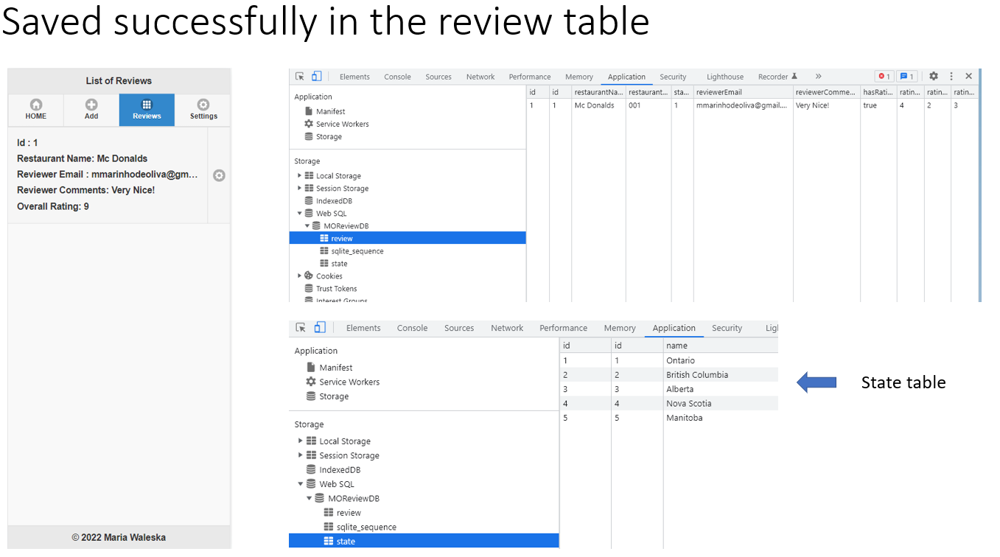
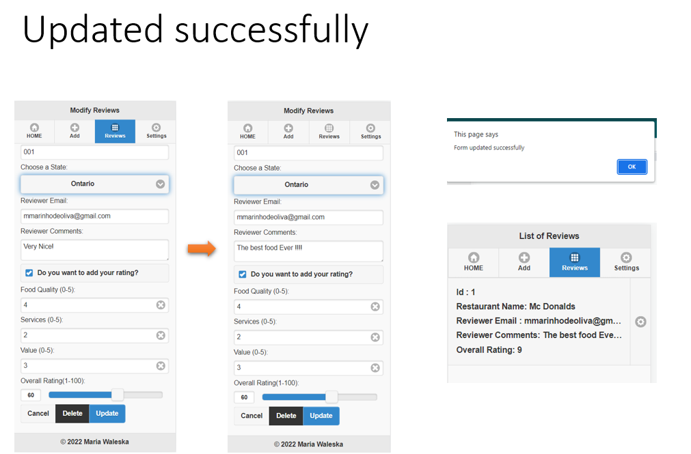
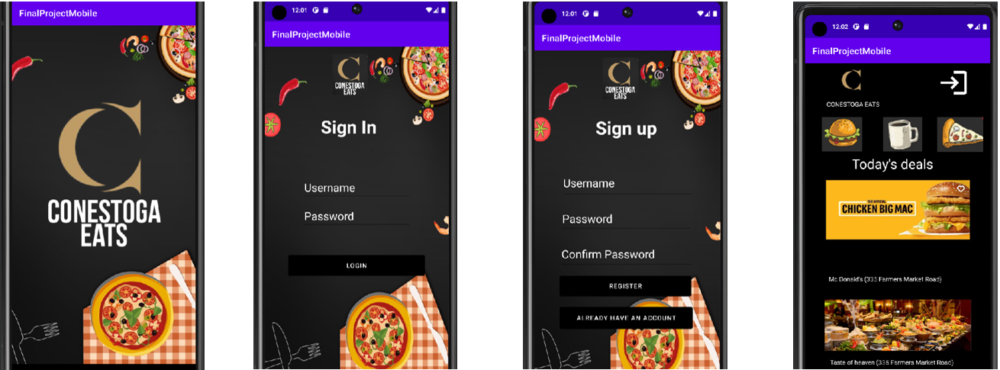
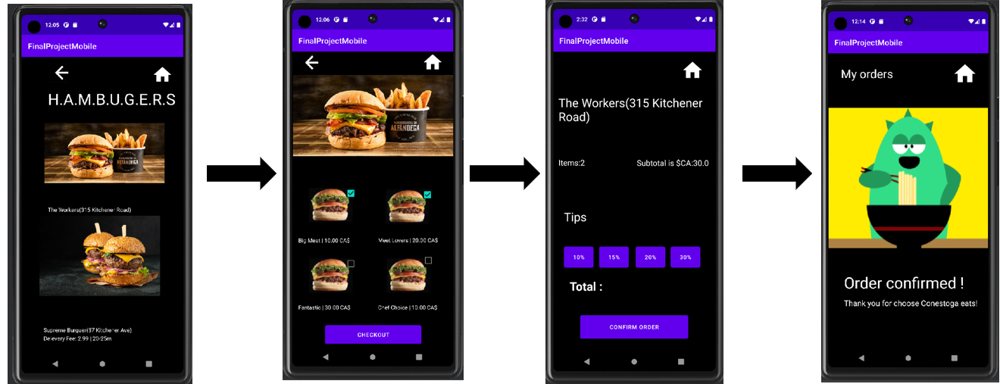

Application built using JQuery and JQuery Mobile , JS and SQL
Mobile application features :
- CRUD operation
- Save data in local storage
- Manage table using Web SQL
- Jquery Validations
- Façade Functions and event handlers


Mobile web app using Angular and Bootstrap
Quick Delivery is a mobile app developed using Angular, Bootstrap, and SQL. It contains home, order, checkout, and settings pages. The settings page includes a form containing validation and a map that shows the user's location. The form can be edited, and the information is saved in the database.
Developing Android apps using Java and Android Studio
Acquired knowledge :
- Android fundamentals
- Android User Interface
- On-device and remote events interface
- Remote and Local database
- Enterprise and Consumer deployment
Conestoga Eats
Conestoga Eats is a food delivery app that provides a user-friendly interface where customers can browse various restaurants, menus, and cuisines. The user needs to sign up in the app to use it. Users can also manage past orders that are being saved in SQLite.
